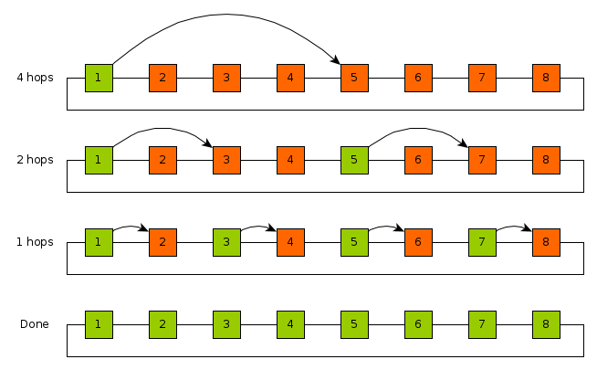

CSCI 5451 Assignment 1: Basic Parallel Architecture and Communication
- Due: Wed 2/02/2022 by 11:59 pm
- Approximately 10% of total grade
- Submit to Gradescope in PDF format
- You may work in groups of 2 and submit one assignment per group.
Note: some of the math fonts used throughout the assignment may not display correctly. I have tested the display on Google Chrome and Mozilla Firefox and seen it work when connected to the network. Notify Prof Kauffman via email if it does not render properly.
CHANGELOG: Empty
Table of Contents
- 1. (20pts) Problem 1: Store-and-forward Routing (Grama 2.26)
- 2. (10pts) Problem 2: Embedding a Ring Network in a Tree Network
- 3. (10pts) Problem 3: Task-dependence Graphs (Grama 3.2)
- 4. (20pts) Problem 4: Parallel Histogram
- 5. (20pts) Problem 5: Parallel One-to-All Broadcast in 2D Torus
- 6. (20pts) Problem 6: Bring the Heat
- 7. Submission Instructions
1 (20pts) Problem 1: Store-and-forward Routing (Grama 2.26)
Consider the routing of messages in a parallel computer that uses store-and-forward routing. In such a network, the cost of sending a single message of size \(m\) from \(P_{source}\) to \(P_{destination}\) via a path of length \(d\) is \(t_s + t_w \times d \times m\). An alternate way of sending a message of size m is as follows. The user breaks the message into \(k\) parts each of size \(m/k\), and then sends these \(k\) distinct messages one by one from \(P_{source}\) to \(P_{destination}\). For this new method, derive the expression for time to transfer a message of size \(m\) to a node \(d\) hops away under the following two cases:
- Assume that another message can be sent from \(P_{source}\) as soon as the previous message has reached the next node in the path.
- Assume that another message can be sent from \(P_{source}\) only after the previous message has reached \(P_{destination}\).
For each case, comment on the value of this expression as the value of \(k\) varies between 1 and \(m\). Also, what is the optimal value of \(k\) if \(t_s\) is very large, or if \(t_s = 0\)?
Clarification: To start sending any message, a cost of \(t_s\) must be paid. For example sending \(m=10\) words in its entirety costs \[t_s + t_w \times d \times 10\] Sending the same message broken into two 5-word chunks costs \[(t_s + t_w \times d \times 5) + (t_s + t_w \times d \times 5)\] if the sending does not overlap.
Example
To increase the clarity, below is a concrete example of the problem setting with communication according to both sets of assumptions. Studying it may help with visualizing the nature of the problem.
* ****** EXAMPLE PROBLEM PARAMETERS ****** *
m=10 : 10 words of data
k=2 : message in two parts, 5 words each [A5 B5]
d=3 : Source to Destination is 3 hops
* ****** A ASSUMPTIONS ****** *
After S sends A5, can immediately send B5 to "follow" it
TIME=0
S:0 ---- 1 ---- 2 ---- D:3
A5,B5
Initiate sending A5
TIME=1*5*t_w + t_s
S:0 ---- 1 ---- 2 ---- D:3
B5 A5
Initiate sending B5
TIME=2*5*t_w + t_s + t_s
S:0 ---- 1 ---- 2 ---- D:3
B5 A5
TIME=3*5*t_w + t_s + t_s
S:0 ---- 1 ---- 2 ---- D:3
B5 A5
TIME=4*5*t_w + t_s + t_s
S:0 ---- 1 ---- 2 ---- D:3
A5,B5
* ****** B ASSUMPTIONS ****** *
After sending A5, S must wait until it arrives at D before send B5.
TIME=0
S:0 ---- 1 ---- 2 ---- D:3
A5,B5
Initiate sending A5
TIME=1*5*t_w + t_s
S:0 ---- 1 ---- 2 ---- D:3
B5 A5
TIME=2*5*t_w + t_s
S:0 ---- 1 ---- 2 ---- D:3
B5 A5
TIME=3*5*t_w + t_s
S:0 ---- 1 ---- 2 ---- D:3
B5 A5
A5 Arrived
Initiate sending B5
TIME=4*5*t_w + t_s + t_s
S:0 ---- 1 ---- 2 ---- D:3
B5 A5
TIME=5*5*t_w + t_s + t_s
S:0 ---- 1 ---- 2 ---- D:3
B5 A5
TIME=6*5*t_w + t_s + t_s
S:0 ---- 1 ---- 2 ---- D:3
A5,B5
SOLUTION solution
A Overlapping messages
In this setting, the source considers the send finished after \(t_s + t_w\times (m/k)\) time as the message will have arrived at the node one hop away (\(h=1\)). The sender can then initiate the next section of the message. This means there will be \(k\) 1-hop sends followed by the final message arriving afterward.
\[ t_{comm} = (t_s + t_w\times (m/k)) \times k + t_w\times (d-1)\times (m/k) \] \[ t_{comm} = k\times t_s + t_w\times m + t_w\times (d-1)\times (m/k) \]
The \(d-1\) is due to the first term accounting for the first hop. With \(k=1\), this reduces to the original model.
B Only after reaching destination
The general form is
\[ t_{comm} = (t_s + t_w\times d \times (m/k)) \times k \] \[ t_{comm} = k\times t_s + t_w\times d\times m \]
This is worse than the above form in which message sending can overlap which is seen in the term \(t_w\times d\times m\) here which either lacks the \(d\) or is divided by \(k\) in the setting above.
Comparison for values of \(k\)
As \(k\) increases to \(m\), the left term \(k\times t_s\) grows large in both settings, particularly if \(t_s\) is large. Thus, for large \(t_s\), \(k=1\) is optimal in both settings due to this term.
If \(t_s\) is zero, it makes no difference how many pieces the message is broken into in either model.
2 (10pts) Problem 2: Embedding a Ring Network in a Tree Network
Section 2.7 of Grama discusses a number techniques to evaluate how well one type of network interconnect may be embedded in another. Two important characteristics of such embedding are identified in Grama 2.7:
- Congestion: The maximum number of links in the source network mapped to a single link the destination network.
- Dilation: The maximum number of links traversed in the destination network which correspond to a single link in the source network.
We briefly discussed this at a high level in lecture indicating that embedding a 2D Mesh into Hypercube is possible as the former has many fewer links than the latter. We were able to informally show that mapping a source 2D Mesh network to a destination Hypercube network would yield a Congestion of 1 (all links in the mesh had a unique link in the Hypercube) and a Dilation of 1 (adjacent procs in the Mesh were adjacent in the Hypercube).
Below is a diagram of an 8-node Ring network (linear array with wrap-around) and an 8-node Binary Tree network (with intermediary switches as squares).

Discuss how one can map/embed the Ring to the Tree. Be detailed, perhaps annotating the diagrams to show the specific mapping. Give the numeric values for Congestion and Dilation in this mapping.
Generalize your answer for a \(2^D\) node Ring mapped to a \(2^D\) node Tree. Provide an analytic expression for Congestion and Dilation. Informally justify your answers (no need for a formal proof).
3 (10pts) Problem 3: Task-dependence Graphs (Grama 3.2)
For the task graphs given in Figure 3.42 (below), determine the following:
- Maximum degree of concurrency.
- Critical path length.
- Maximum achievable speedup over one process assuming that an arbitrarily large number of processes is available.
- The minimum number of processes needed to obtain the maximum possible speedup.
- The maximum achievable speedup if the number of processes is limited to 2, 4, and 8.
Assume that each task node takes an equal amount of time to execute.
Figure 3.42. Task-dependency graphs for this Problem.

SOLUTION solution
A
- 8
- 4
- 15 / 4 = 3.75
- 8
- 8 -> 15/4=3.75, 4 -> 15/5=3, 2 -> 15/8 = 1.875
B
- 8
- 4
- 15 / 4 = 3.75
- 8
- 8 -> 15/4=3.75, 4 -> 15/5=3, 2 -> 15/8 = 1.875
C
- 8
- 7
- 14 / 7 = 2
- 8
- 8 -> 14/7=2, 4 -> 14/8 = 1.75, 2 -> 14/10 = 1.4
D
- 2 with eager scheduling, 8 otherwise
- 8
- 15 / 8 = 1.875
- 2
- 8 -> 15/8 = 1.875, 4 -> 15/8 = 1.875, 2 -> 15/8 = 1.875
4 (20pts) Problem 4: Parallel Histogram
This problem is a variant of Grama 3.19 + 3.20 which discusses Bucket Sort but focuses on the simpler task of computing Histograms.
Consider parallelizing a simple histogram algorithm on a distributed memory computer.
- Input consists of an array
A[]ofNrandom integers in the range{0...(R-1)}. - The algorithm should compute the array of counts
H[]where elementH[i]is the total number of times integeriappeared in input arrayA[]. - All
Pprocessors on the parallel computer are assumed to have access to the entire arrayA[]which can be loaded from permanent storage. However if the sizeNgets large enough, only parts ofA[]can be held in memory for an individual processor. - At the end of the algorithm execution, at least one processor must
contain the entire array
H[]which may involve some communication.
EXAMPLE:
- Input:
R=4andA[]of sizeN=10isA[] = {0, 2, 1, 3, 2, 1, 1, 0, 0, 1} - Output:
H[]of sizeR=4isH[] = {3, 4, 2, 1}asH[i]is the number of occurrences ofithroughoutA[]
Describe two ways to decompose this problem into a parallel program. Compare these two.
- Describe a decomposition based on partitioning the input data
(i.e., the array
A[]) and an appropriate mapping onto p processes. Describe briefly how the resulting parallel algorithm would work. - Describe a decomposition based on partitioning the output data
(i.e., the array
H[]) and an appropriate mapping onto p processes. Describe briefly how the resulting parallel algorithm would work. - Discuss the advantages and disadvantages of these two parallel
formulations. Describe circumstances under which each is
preferred. Such circumstances should consider
Pthe number of processorsRthe number of different data possibilities (size ofH[])A[]the input array andnits size- Potentially also the cost to communicate between the processors
SOLUTION solution
A Input Decomposition
Divide the input array A[] into P chunks as evenly as possible:
each processor hold approximately N/P elements of A[]. Each
processor counts the occurrences of numbers {0..(R-1)} in its own
chunk. After this calculation is complete, the private H[] arrays
are summed through communication/reduction onto a single processor
which is the overall answer vector H[].
B Output Decomposition
Divide the output array H[] into P chunks as evenly as possible:
each processor will hold approximately R/P elements of B. Each
processor must hold a complete copy of the array A[] which is used
to count all the occurrences of its elements of H[]. Once done,
each processor communicates its portion of the array H[] to a lead
processor which concatenates the results to produce the full version
of H[].
C Advantages/Disadvantages
If A[] is large (large N) compared to the output size R (size of
H[]), it may be infeasible for all P processors to hold all of
A[] in memory. This situation lends itself well to the Input
Decomposition which splits up A[] into smaller chunks. The minor
drawback of the Input Decomposition is the need to perform the
communication / reduction at the end which combines all private H[]
arrays to form the cumulative H[] array. Generally, though, the
Input Decomposition is favorable.
There are not too many circumstances which would favor the Output
Decomposition in this formulation of the problem. If R is much
larger than N, H[] will be larger than A[] leading to many 0
counts being present in H[]. Dividing H[] across many processors
to have each count in a relatively small A[] does little work and
then requires considerable communication to concatenate each
processors portion of H[] onto a single processor. For small data
arrays A[] with many possible buckets in H[] the Output
Decomposition is unfavorable compared to just doing serial bucket
sort.
5 (20pts) Problem 5: Parallel One-to-All Broadcast in 2D Torus
Assume processor 0 has a message that must be sent to all other
processors in a distributed memory parallel computer. Describe an
efficient algorithm to do this in a 2D Torus (wrap-around mesh) with
R rows and C columns.
Account for the following in your answers.
- A processor can send a message to any other processor. Any processor between the source and destination does not receive the message, only forwards it along the path. However, once a processor has actually received the message, it can subsequently be a source and send it to other processors.
- Processors can be indexed with 2D coordinates as in processor (0,2) sends a message to processor (5,4)
- Give rough pseudocode for how this algorithm will look
- Give a cost estimate of this communication in terms of the number or
rows
Rand columnsCin the network. The cost of a single communication between nodes that are \(d\) hops away is \[t_{single} = t_s + t_w \times m \times d\] You may assume thatRandCare powers of two in your analysis to simplify the expression for the total communication time \(t_{comm}\).
SOLUTION solution
The torus does not change the nature of broadcast over the mesh. The key idea is to repeatedly double the number of processors which have the broadcast data. This is illustrated in one dimension first on an 8-node line network.

Notably this communication pattern also limits the network contention: each link is used only by one communication at each step.
Assuming the number of columns \(C\) is a power of two and based on the pattern in this diagram the elements of an entire row can be populated in time
\[ t_{row1} = \sum_{i=0}^{\log_2{C}-1} t_s + t_w\times m\times 2^{i} \]
This can be simplified using the identity
\[ \sum_{i=0}^{N-1} 2^i = 2^N -1 \]
and recognizing that counting 0 to \(\log_2{C}-1\) is \(\log_2{C}\) steps which gives the expression
\[ t_{row1} = \log_2{C}\times t_s + t_w\times m\times (2^{\log_2{C} -1)} \] \[ t_{row1} = \log_2{C}\times t_s + t_w\times m\times (C-1) \]
The same horizontal process is repeated vertically in each column simultaneously giving \[ t_{cols} = \log_2{R}\times t_s + t_w\times m\times (R-1) \]
which gives a total cost of \[ t_{comm} = \log_2{C}\times t_s + t_w\times m\times (C-1) + \log_2{R}\times t_s + t_w\times m\times (R-1) \] \[ t_{comm} = (\log_2{C}+\log_2{R})\times t_s + t_w\times m\times (C+R-2) \]
Pseudocode:
BroadCast for a torus with R rows and C columns
Assume R and C are powers of 2
Message starts on processor 1,1
for( t=C/2; t>=0; t = t/2 ):
each proc (1,j) which has message sends it to proc (1,j+t)
All of row 1 now has messages
for( t=R/2; t>=0; t = t/2 ):
each proc (i,j) which has message sends it to proc (i+t,j)
All processors now have the message
6 (20pts) Problem 6: Bring the Heat
Consider a simple physical simulation of heat transfer. A rod of material is insulated except at its ends to which are attached two constant sources of heat/cold.

The rod is broken into discrete chunks, sometimes referred to as finite elements, and it is assumed that throughout each element the temperature is uniform. The reservoir elements of heat/cold at the left and right remain at a constant temperature. For the other elements, the temperature is updated at each time step by examining the temperature of its neighbors compared to itself. This dependence is indicated in the lower part of the diagram and the exact update for an element is given in the code below.
The following C code implements a simple version of this simulation.
A row of the matrix H contains the temperature of all elements in
the rod at a time step with the leftmost and rightmost elements
remaining constant. Ultimately, the program computes the entire matrix
H which contains temperatures of all elements at all time steps.
Examine this code carefully.
#include <stdio.h>
#include <stdlib.h>
// HEAT TRANSFER SIMULATION
//
// Simple physical simulation of a rod connected at the left and right
// ends to constant temperature heat/cold sources. All positions on
// the rod are set to an initial temperature. Each time step, that
// temperature is altered by computing the difference between a cells
// temperature and its left and right neighbors. A constant k
// (thermal conductivity) adjusts these differences before altering
// the heat at a cell. Use the following model to compute the heat
// for a position on the rod according to the finite difference
// method.
//
// left_diff = H[t][p] - H[t][p-1];
// right_diff = H[t][p] - H[t][p+1];
// delta = -k*( left_diff + right_diff )
// H[t+1][p] = H[t][p] + delta
//
// Substituting the above, one can get the following
//
// H[t+1][p] = H[t][p] + k*H[t][p-1] - 2*k*H[t][p] + k*H[t][p+1]
//
// The matrix H is computed for all time steps and all positions on
// the rod and displayed after running the simulation. The simulation
// is run for a fixed number of time steps rather than until
// temperatures reach steady state.
int main(int argc, char **argv){
int max_time = 50; // Number of time steps to simulate
int width = 20; // Number of cells in the rod
double initial_temp = 50.0; // Initial temp of internal cells
double L_bound_temp = 20.0; // Constant temp at Left end of rod
double R_bound_temp = 10.0; // Constant temp at Right end of rod
double k = 0.5; // thermal conductivity constant
double **H; // 2D array of temps at times/locations
// Allocate memory
H = malloc(sizeof(double*)*max_time);
int t,p;
for(t=0;t<max_time;t++){
H[t] = malloc(sizeof(double*)*width);
}
// Initialize constant left/right boundary temperatures
for(t=0; t<max_time; t++){
H[t][0] = L_bound_temp;
H[t][width-1] = R_bound_temp;
}
// Initialize temperatures at time 0
t = 0;
for(p=1; p<width-1; p++){
H[t][p] = initial_temp;
}
// Simulate the temperature changes for internal cells
for(t=0; t<max_time-1; t++){
for(p=1; p<width-1; p++){
double left_diff = H[t][p] - H[t][p-1];
double right_diff = H[t][p] - H[t][p+1];
double delta = -k*( left_diff + right_diff );
H[t+1][p] = H[t][p] + delta;
}
}
// Print results
printf("Temperature results for 1D rod\n");
printf("Time step increases going down rows\n");
printf("Position on rod changes going accross columns\n");
// Column headers
printf("%3s| ","");
for(p=0; p<width; p++){
printf("%5d ",p);
}
printf("\n");
printf("%3s+-","---");
for(p=0; p<width; p++){
printf("------");
}
printf("\n");
// Row headers and data
for(t=0; t<max_time; t++){
printf("%3d| ",t);
for(p=0; p<width; p++){
printf("%5.1f ",H[t][p]);
}
printf("\n");
}
return 0;
}
Answer the following questions about how to parallelize this code.
- A typical approach to parallelizing programs is to select a loop and split iterations of work between available processors. Describe how one might do this for the heat program. Make sure to indicate any loops for which this approach is not feasible and any which seem more viable to you.
- Describe how you would divide the data for the heat transfer problem among many processors in a distributed memory implementation to facilitate efficient communication and processing. Describe a network architecture that seems to fit this problem well and balances the cost of the network well.
SOLUTION solution
A Parallelizing loops
The main computation loop is doubly nested iterating over t (time)
in the outer loop and p (position) in the inner loop. Importantly,
there are dependencies between timesteps: row t+1 of the result
matrix H is computed using elements from the previous row t. This
means the task of computing each element are dependent on preceding
tasks of computing rows above it and cannot be done in parallel.
Instead, the best parallelization is on the inner loop. Each position
p is dependent on elements of the preceding row. Thus, all
positions of row H[t+1] can be computed simultaneously provided
access to row H[t].
B Data Distribution
Since it is not possible to parallelize on the rows of the output
matrix, the data should be split along the columns which represent
positions of the rod. Data should be distributed so that adjacent
columns reside on nearby processors. A linear array of processors is
all that is required to keep relevant data close to processors that
need it (a mesh or hypercube can be easily mapped to a linear array).
Each time step t, a processor uses the values it has from the
previous time step in its columns along with a few values transmitted
from adjacent processors to compute part of the row t+1. This keeps
the data needed to compute each partial row fairly local to the
processors that need it which reduces communication costs.
7 Submission Instructions
- Complete the problems in each section labelled Problem
- This is a pair assignment: you may select one partner to work with on this assignment as a group of 2. You may also opt to work alone as a group of 1.
- Only 1 member of your group should submit the HW Writeup on Gradescope. If you are working in a partnership, add your partner after submitting as described below.
Make sure the HW Writeup has all group member's information in it:
CS 5451 HW 1 Group of 2 Turanga Leela tleela4@umn.edu Philip J Fry pfry99@umn.edu
- Submit a PDF (portable document format, .pdf) of your work. Whatever program you write your answers in (Microsoft Word, Apple Words, Google Docs, Latex, etc.) make sure you can export or "save as" a PDF.
- Submit your work to Gradescope under Assignment 1
- Log into Gradescope
- Assignment 1
- Select your PDF for upload
- Use the Gradescope system to indicate which of your answers are on which page of your PDF submission - this will make things easier on your grader (you want a happy grader).
- After uploading, add your partner as a group member if you had one.
Picture Sequence of Uploading an Assignment
Selecting a PDF to upload


Indicate problem answers on each page

Adding a Group Member on Gradescope
Submitter should edit the group associated with the submission

Find your partner in the search box

Ensure your partner is listed

Late Submission
As described in the Course Syllabus, late submissions are penalized as follows.
- On-time submissions receive no penalties
- Submitting 1-24 hours will result in the loss of 10% absolute credit
- Submitting 25-48 hours late will result in the loss 20% absolute credit
- No submissions will be accepted more than 48 hours after a deadline.